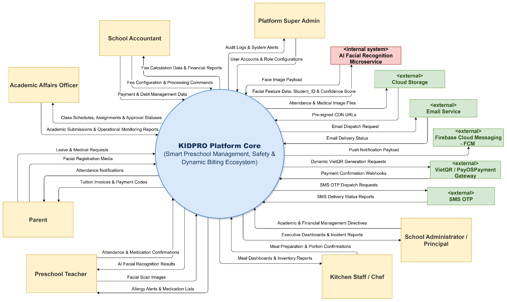
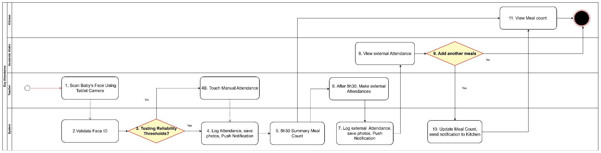
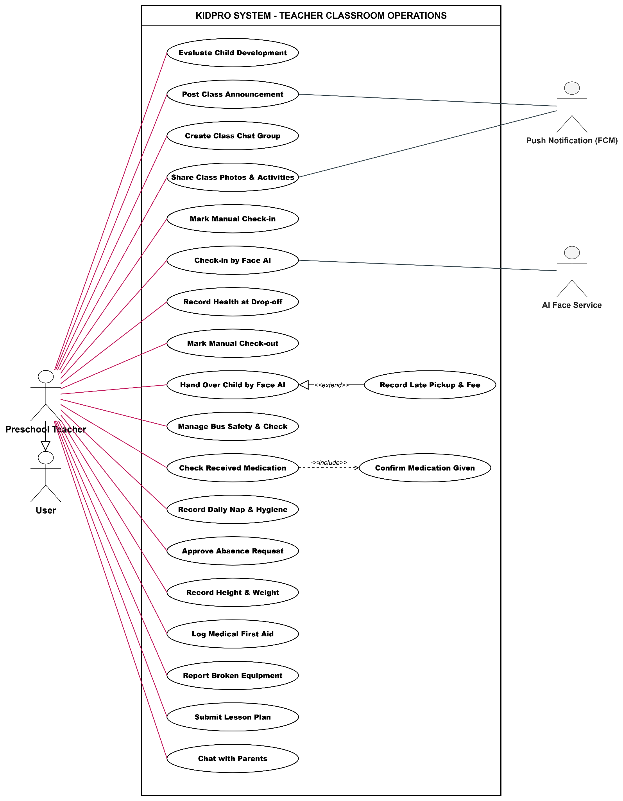
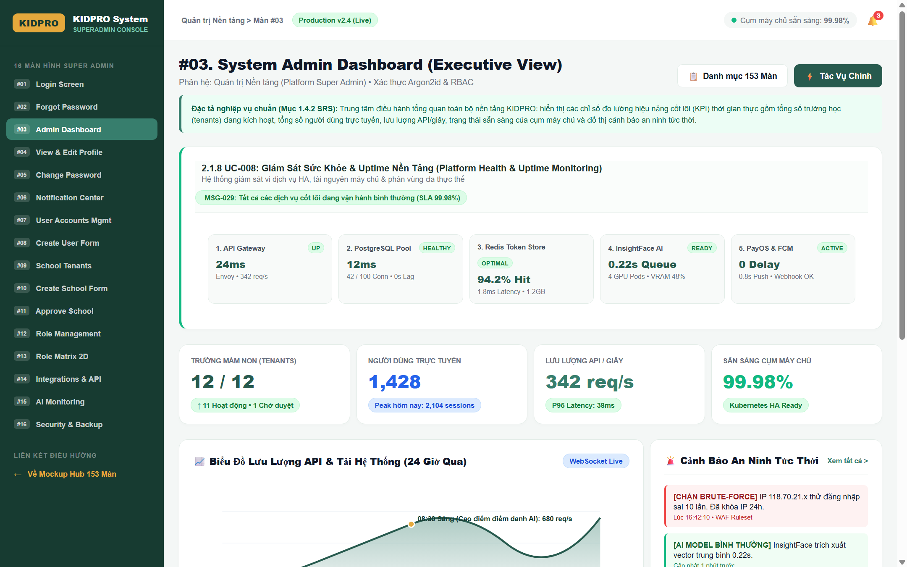

Kidpro – Smart Preschool Management & AI-face attendance Automation Kidpro – Quản lý Mầm non Thông minh & tích hợp AI điểm danh khuôn mặt
A comprehensive preschool platform integrating AI facial recognition for student check-in, dual-factor child pickup security, and automated boarding meal fee reconciliation tied to dynamic leave policies. Nền tảng quản lý trường mầm non toàn diện tích hợp AI nhận diện khuôn mặt điểm danh, cơ chế an toàn kép khi trả trẻ và tự động đối soát hoàn phí tiền ăn bán trú theo chính sách xin nghỉ phép linh hoạt.
Project Overview Tổng quan Dự án
🚨 The Business Problem 🚨 Vấn đề Nghiệp vụ Thực tế
- Boarding Meal Fee Disputes:Tranh chấp tiền ăn bán trú: Morning headcounts taken manually on paper sheets frequently caused end-of-month invoice disputes between parents and accountants regarding absent-day meal deductions. Điểm danh buổi sáng thủ công bằng sổ giấy thường xuyên gây ra tranh chấp hóa đơn cuối tháng giữa phụ huynh và kế toán về việc hoàn trừ tiền ăn các ngày nghỉ.
- Dismissal & Child Pickup Vulnerabilities:Lỗ hổng an toàn khi trả trẻ: Paper logbooks during busy 4:30 PM - 5:30 PM rush hours created risks of unauthorized individuals picking up children without digital audit trails. Sổ ký nhận bằng giấy trong giờ cao điểm 16:30 - 17:30 tiềm ẩn rủi ro người lạ đón trẻ mà không có dấu vết kiểm toán số (digital audit trail).
- Accountant Bottlenecks:Điểm nghẽn kế toán: Reconciling manual attendance books with variable boarding meal pricing consumed ~4 full business days each monthly billing cycle. Việc đối soát sổ điểm danh giấy với chính sách giá ăn bán trú phức tạp làm tiêu tốn khoảng 4 ngày làm việc trọn vẹn trong mỗi kỳ quyết toán tháng.
- Network Offline Edge Cases:Rủi ro mất kết nối mạng: Parents submitting leave requests on the app could be unfairly charged if teachers experienced mobile network outages and could not approve before meal preparation lock. Phụ huynh nộp đơn xin nghỉ đúng giờ trên ứng dụng nhưng giáo viên bị mất mạng di động và không kịp duyệt trước giờ chốt suất ăn khiến phụ huynh bị tính tiền oan.
🎯 Core Objectives & Solutions 🎯 Mục tiêu Cốt lõi & Giải pháp
- Automate Attendance:Tự động hóa điểm danh: Deploy AI facial recognition at the school gate for morning roll-call with real-time sync to the kitchen and accounting modules. Triển khai camera AI nhận diện khuôn mặt tại cổng trường để điểm danh buổi sáng, đồng bộ tức thời đến phân hệ nhà bếp và kế toán.
- Package-Differentiated Meal Policies:Chính sách hoàn tiền ăn theo gói: Enforce strict, transparent cutoff times for meal fee refunds based on service packages (07:00 AM for Full Boarding vs 08:30 AM for Lunch-Only). Thiết lập giờ chốt hủy suất ăn minh bạch theo từng gói dịch vụ bán trú (07:00 sáng cho gói Toàn phần vs 08:30 sáng cho gói Chỉ ăn trưa và xế chiều).
- Dual-Verification Pickup with Human Backup:Xác minh trả trẻ kép kèm dự phòng: Authenticate authorized guardians via AI, while providing a seamless Teacher Familiarity Override for known parents. Xác thực người đón hợp lệ qua AI, đồng thời cung cấp cơ chế Giáo viên trả thủ công đối với phụ huynh quen mặt.
- Automated Late Pickup Billing:Tự động tính phí trông muộn: Dynamically compute after-hours care fees beyond 5:30 PM to compensate on-duty teachers fairly. Tự động tính phụ phí giữ trẻ ngoài giờ sau 17:30 theo các khung bậc lũy tiến để bù đắp công bằng cho giáo viên trực muộn.
📋 In-Scope System Capabilities 📋 Phạm vi Nghiệp vụ Trong Hệ thống
The core KidPro platform manages student lifecycle and daily operational routines across 7 preschool stakeholders: Nền tảng KidPro quản lý trọn vẹn vòng đời học sinh và chuỗi vận hành hàng ngày của 7 tác nhân mầm non:
- People (7 Actors):Tác nhân (7 Vai trò): Preschool Teachers, Parents/Guardians, School Accountants, Academic Affairs Officers, Kitchen Staff, School Principals, Platform Super Admins. Giáo viên, Phụ huynh, Kế toán trường, Cán bộ giáo vụ, Nhân viên nhà bếp, Ban giám hiệu, Quản trị viên hệ thống.
- Core Functional Modules:Các phân hệ nghiệp vụ cốt lõi: AI Morning Attendance, Afternoon Child Dismissal Security, Boarding Meal Count Aggregation, Automated Tuition Billing with PayOS VietQR, Class Allocation & Teacher(school manage) Assignment. Điểm danh FaceID buổi sáng, An toàn trả trẻ buổi chiều, Tổng hợp suất ăn bán trú nhà bếp, Quyết toán học phí tự động PayOS VietQR, Phân bổ lớp & Phân công giáo viên(quản trị trường).
🚫 Outside Scope (Architectural Demarcations) 🚫 Ngoài phạm vi (Ranh giới Kiến trúc)
Explicit architectural boundary demarcations delegating specialized services to third-party providers: Các ranh giới kiến trúc xác định rõ chức năng ủy nhiệm cho các nhà cung cấp chuyên biệt bên ngoài:
- Direct Core Banking Ledgering:Hệ thống hạch toán ngân hàng: KidPro does not store bank card numbers; payment processing and settlement are delegated to the licensed PayOS VietQR Payment Gateway. KidPro không lưu trữ thẻ ngân hàng; việc xử lý giao dịch tài chính do Cổng thanh toán trung gian PayOS VietQR đảm nhiệm qua Webhook.
- External Food Procurement & Logistics:Chuỗi cung ứng thực phẩm bên ngoài: Direct contracts and logistical purchase orders with agricultural vendors remain managed by external school procurement. Hợp đồng và chuỗi giao nhận hàng hóa từ các nhà cung cấp thực phẩm do phòng hành chính mua sắm quản lý ngoài phần mềm.
- General Teacher Payroll & Social Insurance:Quản lý lương & Bảo hiểm giáo viên: The platform outputs late-stay overtime hours and attendance metrics to external accounting systems without managing national social insurance files. Hệ thống chỉ xuất số giờ trông muộn và tỷ lệ chuyên cần phục vụ tính phụ cấp, không quản lý hồ sơ bảo hiểm xã hội toàn diện.
🏫 5 Core Preschool Operational Workflows (Scope Specification) 🏫 5 Luồng Nghiệp vụ Vận hành Mầm non Cốt lõi (Đặc tả Phạm vi)
Tablet camera scans child at entrance → AI Facial Recognition evaluates feature vectors → auto logs attendance & sends real-time push notification with photo to Parent → fallbacks to 1-tap manual roll-call if unverified. Camera tablet quét mặt trẻ tại cổng → Microservice AI nhận diện vector → tự động ghi nhận điểm danh & gửi thông báo kèm ảnh tức thời về App Phụ huynh → dự phòng điểm danh thủ công 1 chạm nếu nhận diện không khớp.
At 08:30 AM daily cutoff → system aggregates total present students minus excused leaves → generates live kitchen meal preparation dashboard → late arrivals after 08:30 require Academic Affairs override for extra food portions. Đến giờ chốt 08:30 sáng hàng ngày → hệ thống tự động tổng hợp sĩ số học sinh có mặt trừ đi các đơn nghỉ hợp lệ → kết xuất số lượng suất ăn cho Nhà bếp chuẩn bị → các ca đến muộn sau 08:30 cần Giáo vụ duyệt để bổ sung suất ăn.
Teacher scans pickup guardian → system verifies against authorized profile → child handoff logged. If unidentifiable, registered photo is pushed to teacher for Controlled Manual Verification Fallback inspection → auto calculates incremental late fees for departures after 17:30. Giáo viên quét mặt người đón → hệ thống kiểm tra tính hợp lệ với hồ sơ người giám hộ → trả trẻ & lưu nhật ký. Nếu không nhận diện được, gửi ảnh gốc về máy giáo viên để đối chiếu bằng mắt → tự tính phí đón muộn sau 17:30.
Accountant initiates batch invoices → system deducts verified meal refunds & adds late pickup fees → generates Dynamic VietQR code with unique invoice string → banking webhook triggers instant debt crossing & issues e-receipt. Kế toán phát hành bảng kê học phí hàng loạt → hệ thống tự động hoàn trừ tiền ăn ngày nghỉ hợp lệ & cộng phụ phí trông muộn → tạo mã VietQR động gắn mã hóa đơn → Webhook gạch nợ tự động tức thì.
Principal / Academic Officer initializes new academic year & semesters → configures grade levels, classroom capacities & room wings → assigns homeroom / assistant teachers → allocates student roster & activates parent portal accounts. Hiệu trưởng / Giáo vụ khởi tạo niên khóa & học kỳ mới → thiết lập cấu trúc khối tuổi, định biên sĩ số & bố trí phòng học → phân công giáo viên chủ nhiệm / trợ giảng → phân bổ danh sách học sinh vào lớp & kích hoạt tài khoản phụ huynh đầu năm.
My Contribution Đóng góp của tôi
Specific Ownership & Deliverables Phạm vi Trách nhiệm & Sản phẩm Bàn giao Cụ thể
Within a 5-member project team, I held direct responsibility for formulating requirements, modeling process flows, and developing interactive prototypes for three critical functional domains: Trong nhóm dự án 5 thành viên, tôi trực tiếp chịu trách nhiệm thu thập yêu cầu, mô hình hóa quy trình và xây dựng nguyên mẫu tương tác cho 3 miền chức năng cốt lõi:
Boarding Attendance Subsystem Phân hệ Điểm danh Bán trú
Defined stakeholder requirements with school principals and teachers; modeled morning gate scan workflows and formulated automated meal fee refund business rules based on service tier packages. Thu thập và thống nhất yêu cầu từ hội đồng đồ án cùng giáo viên; mô hình hóa quy trình quét mặt tại trường và xây dựng quy tắc hoàn tiền ăn tự động dựa trên các gói bán trú.
Child Pickup & Late Fee Billing Quy trình Đón trẻ & Tính phí Trông muộn
Formulated dual-verification security logic (matching child with registered guardian profile), designed the Controlled Manual Verification Fallback fallback flow, and specified automatic incremental late fee calculations. Xây dựng logic bảo mật xác minh kép (đối khớp trẻ với hồ sơ người đón đã đăng ký), thiết kế luồng dự phòng Giáo viên quen mặt cho trả trẻ thủ công, và đặc tả thuật toán tính phí đón muộn lũy tiến.
Classroom & Timetable Management Quản lý Lớp học & Thời khóa biểu
Specified academic year division, classroom teacher assignments, and weekly activity scheduling with role-based viewing permissions for parents. Đặc tả cấu trúc phân chia năm học, phân công giáo viên chủ nhiệm và lập lịch hoạt động tuần kèm cơ chế phân quyền xem cho phụ huynh.
Prototyping & Technical Validation Tạo mẫu & Thẩm định Kỹ thuật
Rapidly generated initial wireframes using Stitch AI, built high-fidelity interactive component systems in Figma, and utilized Claude Code to develop working HTML/CSS UI demos for stakeholder validation. Sử dụng Stitch AI để tạo nhanh bố cục wireframe ban đầu, hoàn thiện thiết kế chi tiết trên Figma, và ứng dụng Claude Code để lập trình bản demo HTML/CSS tương tác phục vụ trình diễn và đánh giá.
Cross-Team Support & Peer Reviews Phối hợp & Phản biện Nhóm
Collaborated with teammates to review use cases across Financial Billing, Nutrition Management, and Parent Portal modules, guaranteeing end-to-end data integrity across all 87 SRS use cases. Đồng hành phản biện các Use Case của đồng đội thuộc phân hệ Quyết toán Tài chính, Quản lý Dinh dưỡng và Cổng thông tin Phụ huynh, bảo đảm tính nhất quán trên toàn bộ 87 UC trong tài liệu SRS.
Case Study Evidence & Analysis Mô hình & Bằng chứng Phân tích Nghiệp vụ
A step-by-step walkthrough of analytical models, business logic specifications, and interactive interface artifacts extracted from the SRS document. Hành trình trực quan hóa các mô hình phân tích, đặc tả logic nghiệp vụ và sản phẩm giao diện tương tác trích xuất từ tài liệu SRS.
System Context Diagram – KIDPRO Platform Core & Ecosystem Boundaries Sơ đồ Ngữ cảnh Hệ thống – KIDPRO Platform Core & Ranh giới Hệ sinh thái
Defining bidirectional information flows between the central KIDPRO engine, 7 human stakeholder personas, 1 internal AI computer vision microservice, and 5 external cloud ecosystems. Xác định các luồng thông tin hai chiều giữa hệ thống trung tâm KIDPRO, 7 nhóm tác nhân con người, 1 microservice AI thị giác máy tính nội bộ và 5 hệ sinh thái dịch vụ đám mây tích hợp.

🔍 Click to enlarge🔍 Click phóng to1. 5 Core Operational BPMN Workflows 1. 5 Quy trình Vận hành BPMN Cốt lõi
Decomposing end-to-end preschool operations into standardized swimlane activity models, balancing AI computer vision verification with human teacher operational flexibility and cross-functional exception handling. Mô hình hóa toàn bộ nghiệp vụ vận hành trường mầm non thành các quy trình phân làn (Swimlanes) chuẩn mực, cân bằng giữa độ chính xác của camera AI và tính linh hoạt nghiệp vụ của giáo viên, làm rõ điểm rẽ nhánh xử lý ngoại lệ.
5 Core Operational BPMN Workflows 5 Quy trình Vận hành BPMN Cốt lõi
5 Core Workflows 5 Quy trình Cốt lõiClick each tab below to examine the corresponding swimlane activity diagram and its business logic: Bấm chọn từng tab bên dưới để xem sơ đồ luồng nghiệp vụ phân làn (Swimlane) và quy tắc xử lý tương ứng:

🔍 Click to enlarge🔍 Click phóng toMorning check-in with AI computer vision roll-call: Tablet camera captures child's face → System validates Face ID against vector store → Evaluates reliability threshold. Fallback to 1-tap manual attendance if unverified. At 08:30 AM, system aggregates summary meal count and pushes real-time portions to Kitchen staff.
📋 Role-Based Use Case Decomposition by Actor 📋 Phân rã Use Cases theo Từng Nhóm Tác nhân
Functional decomposition covering all UC, categorizing operational duties, parent touchpoints, and financial authorization boundaries: Phân rã chức năng bao quát toàn bộ các UC, phân định rõ quyền hạn của giáo viên, điểm chạm của phụ huynh và ranh giới quản trị tài chính:

🔍 Click to enlarge🔍 Click phóng toCore classroom teacher operational use cases: Morning roll-call attendance via AI FaceID camera, 1-tap manual check-in override, student health/medication administration logging, afternoon child dismissal verification, and daily classroom activity journal logging.
2. Package-Differentiated Meal Fee Refund Business Rules 2. Quy tắc Nghiệp vụ Hoàn phí Tiền ăn theo Gói Dịch vụ
Formulating rigorous business rules based on school boarding service tiers, with protective clauses for network latency. Thiết lập các quy tắc nghiệp vụ chặt chẽ theo phân hạng gói bán trú, bổ sung điều khoản bảo vệ phụ huynh khi mạng gặp sự cố.
📋 Boarding Service Package Rules 📋 Quy tắc Gói Dịch vụ Bán trú
- Package A (Full Day Boarding - Sáng, Trưa, Xế):Gói A (Bán trú Toàn phần - Sáng, Trưa, Xế): Includes breakfast, lunch, and afternoon snack. Due to early morning food preparation at 07:15 AM, leave requests must be submitted on the system before 07:00 AM to qualify for a full meal fee refund . Bao gồm bữa sáng, trưa và xế. Do nhà bếp sơ chế bữa sáng lúc 07:15, đơn xin nghỉ phải gửi lên hệ thống trước 07:00 sáng để được hoàn toàn bộ tiền ăn.
- Package B (Standard Boarding - Trưa, Xế):Gói B (Bán trú Tiêu chuẩn - Trưa, Xế): Includes lunch and afternoon snack only. The kitchen lock cutoff is 08:30 AM; therefore, leave requests submitted before 08:00 AM are eligible for meal deduction. Chỉ bao gồm bữa trưa và xế. Giờ khóa thực phẩm bữa trưa là 08:30; do đó, đơn xin nghỉ nộp trước 08:00 sáng sẽ hợp lệ để trừ tiền ăn.
- Unexcused Absence (Nghỉ không phép):Nghỉ không phép (Unexcused Absence): Students absent without an advance portal request receive zero meal fee refund, as food ingredients were already prepped. Học sinh nghỉ học không có đơn báo trước trên app sẽ không được hoàn tiền ăn vì nguyên liệu suất ăn đã được chuẩn bị và nấu chín.
⚡ Offline Protection Rule (Chống lỗi mạng) ⚡ Cơ chế Bảo vệ khi Mất mạng (Offline Protection Rule)
- The Problem:Vấn đề phát sinh: When a parent submits a leave request on time, but the classroom teacher experiences 3G/Wi-Fi disconnection, the request sits in a pending queue unapproved. Khi phụ huynh gửi đơn xin nghỉ đúng giờ quy định, nhưng điện thoại giáo viên mất kết nối 3G/Wi-Fi, đơn bị kẹt ở trạng thái chờ duyệt.
-
The BA Solution:Giải pháp của
BA:
The financial reconciliation engine strictly evaluates the request's creation
timestamp (
submitted_at) recorded on the server/cloud, rather than the teacher's approval timestamp (approved_at). Động cơ đối soát tài chính đối chiếu nghiêm ngặt theo thời điểm gửi đơn của phụ huynh ghi nhận trên máy chủ (submitted_at), thay vì thời điểm giáo viên duyệt (approved_at). - The Business Impact:Tác động nghiệp vụ: Protects parent financial rights 100% against operational edge cases, eliminating unfair charges and disputes. Bảo vệ quyền lợi tài chính của phụ huynh 100% trước các sự cố ngoại cảnh, triệt tiêu hoàn toàn khiếu nại tính phí sai.
3. Enterprise Data Architecture & Comprehensive Relational ERD 3. Kiến trúc Dữ liệu Doanh nghiệp & Sơ đồ Thực thể ERD
Structuring a comprehensive relational database schema comprising 30+ normalized entities to ensure immutable audit trails across biometric face recognition attendance, dynamic boarding meal deductions, dynamic VietQR invoicing, and student medical profiles. Thiết kế mô hình cơ sở dữ liệu quan hệ doanh nghiệp chuẩn hóa với hơn 30 bảng thực thể, bảo đảm dấu vết kiểm toán bất biến giữa điểm danh sinh trắc học, khấu trừ tiền ăn bán trú tự động, phát hành hóa đơn VietQR động và theo dõi y tế học sinh.
4. AI-Driven Rapid Prototyping & Design System Validation 4. Quy trình Tạo mẫu Nhanh & Chuẩn hóa Thiết kế cùng AI
Translating 70+ granular SRS requirements into a fully realized, interactive 153-screen prototype suite across 7 operational kindergarten roles. By chaining Stitch AI for rapid layout exploration, Figma for component atomic tokens, and Claude Code for semantic frontend generation, the team validated usability, edge cases, and business rules prior to engineering handoff. Chuyển hóa yêu cầu chức năng SRS thành bộ nguyên mẫu tương tác hoàn chỉnh gồm 153 màn hình trải rộng trên 7 nhóm tác nhân trường mầm non. Thông qua chuỗi phối hợp giữa Stitch AI để thăm dò bố cục, Figma để chuẩn hóa hệ thống component nguyên tử và Claude Code để xuất mã giao diện ngữ nghĩa, toàn bộ luồng nghiệp vụ và xử lý ngoại lệ được thẩm định thực tế trước khi bàn giao cho đội ngũ phát triển.
KIDPRO System · Mockup Suite KIDPRO System · Mockup Suite
Full-fidelity interactive prototype suite featuring 153 standardized screens meticulously aligned with SRS functional modules: multi-tenant administration, AI computer vision roll-call, PayOS VietQR billing & meal rebate automation, and tablet kitchen nutrition. Covers all 7 user roles across Web Desktop, Mobile App, and Tablet platforms. Bộ prototype tương tác đầy đủ 153 màn hình chuẩn hóa toàn diện theo SRS phân hệ quản trị, điểm danh AI, tài chính và dinh dưỡng. Bao phủ trọn vẹn 7 tác nhân từ Quản trị nền tảng, Ban Giám Hiệu, Giáo vụ, Kế toán, Giáo viên, Phụ huynh đến Bếp ăn bán trú trên cả 3 nền tảng Web Desktop, Mobile App và Tablet.
📋 Interactive Role Mockup Explorer · 7 Representative Portals 📋 Khám phá Màn hình Tiêu biểu theo Role · 7 Nhóm Tác nhân Vận hành
7 Key Screens · 7 Roles 7 Màn hình Tiêu biểu · 7 RoleSelect each operational role below to inspect its representative screen, SRS validation rules, and launch live interactive preview directly on Vercel: Bấm chọn từng vai trò vận hành bên dưới để khảo sát màn hình đại diện, quy chuẩn nghiệp vụ SRS và mở giao diện tương tác trực tiếp trên Vercel:

🔍 Click to enlarge (Lightbox) 🔍 Click phóng to (Lightbox)Trung tâm điều hành tổng quan toàn bộ nền tảng KIDPRO dành cho Super Admin. Giám sát thời gian thực toàn bộ chuỗi trường mầm non (multi-tenant): lưu lượng API/giây, trạng thái cụm máy chủ, hồ sơ tenant đang hoạt động và biểu đồ kiểm soát sức khỏe cụm microservice AI (nhận diện khuôn mặt YOLO & véc-tơ InsightFace 512D).